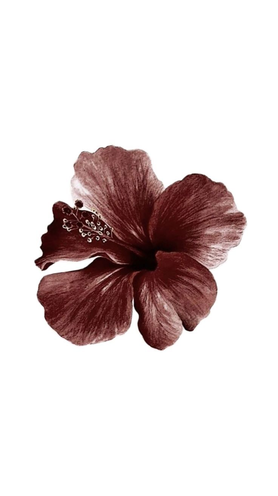
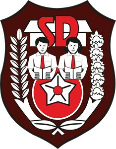

HALLO 👋, saya

PATIMAH AZAHRA
Selamat datang di blog saya! Blog ini berisi informasi tentang diri saya, pengalaman,dan beberapa proyek yang telah saya kerjakan selama belajar di jurusan Rekayasa Perangkat Lunak.
Tentang Saya
Nama saya Patimah Azahra,Saya adalah siswa di SMKN 1 RONGGA kelas XI-RPL3 jurusan rekayasa perangkat lunak (RPL). Saya tertarik mempelajari teknologi dan membuat aplikasi.Saya termasuk orang yang terus berusaha belajar dan memperbaiki diri. Saya berharap dapat mengembangkan kemampuan saya dan meraih masa depan yang baik.
portofolio
portofolio
Berikut adalah beberapa karya dan project yang saya buat selama proses belajar dibidang pemrograman,
Di dalamnya terdapat hasil desain website,coding,dan aplikasi sederhana yang menunjukan
kemampuan saya dalam bidang teknologi.
membuat flexbox
desain halaman web
pengalaman
Saya memiliki pengalaman belajar dasar-dasar pemrograman selama sekolah. Saya pernah belajar membuat website sederhana menggunakan HTML dan CSS, serta belajar membuat aplikasi, Saya belajar mengatur tata letak,warna,serta membuat,halaman agar terlihat rapi dan mudah digunakan.
Blog
Blog ini berisi cerita mengenai pengalaman belajar, proses belajar mengerjakam projrect, serta berbagai hal menarik, Blog ini di buat dengan tampilan sederhana,rapi,dan mudah digunakan agar pembaca dapat menemukan informasi dengan nyaman.
Pendidikan
Riwayat pendidikan
SDN KUBANGSARI, SMPN 1 GUNUNG HALU, SMKN 1 RONGGA
